P.O. Box 1342 * Bellevue, WA 98009 * jlk@eskimo.com
PART THREE
If you have not yet completed Part Two, please finish before continuing with Part Three.
You will need a 60 degree triangle for Part Three. I suggest using the "Clearview Triangle-60" or "Super 60" by Sara Nephew. You can purchase it directly through her company, Clearview Triangle on the internet or call toll-free 1-888-901-4151. I apologize for not including this information in Part 1, but I didn't want to give away too much of the mystery.
1. Line the 2 3/4" line of your Clearview Triangle along the bottom edge of the strip of fabric W (Figure 5).
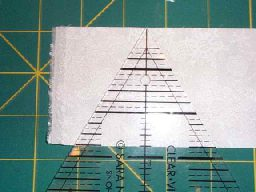
Figure 5
2. Cut on both sides (Figure 6) to create a triangle.
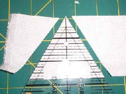
Figure 6
3. Turn the Clearview Triangle upside down,
making sure the top edge of the fabric strip is aligned with the
2 3/4"
line and the left edge of the fabric is aligned with
the edge of the Clearview Triangle (Figure 7).
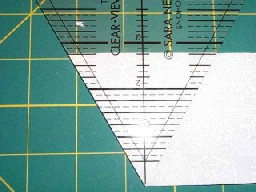
Figure 7
4. Cut along the right side (Figure 8) to make another triangle.
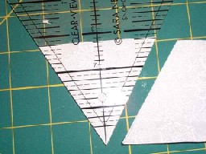
Figure 8
5. Repeat steps 1 through 4 until you have cut 72(648) triangles from fabric W.
6. Repeat steps 1 through 4 until you have cut 106(954) triangles from fabric B.
7. Line the 2 3/4" line of your Clearview Triangle along the bottom edge of Strata 2 (Figure 9).
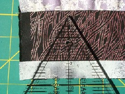
Figure 9
8. Place a second ruler along the right side of the Clearview Triangle (Figure 10).
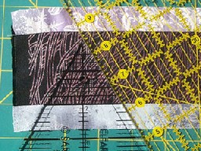
Figure 10
9. Remove the Clearview Triangle and cut along the left side of the ruler (Figure 11).
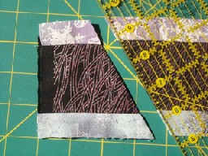
Figure 11
10. Place the Clearview Triangle back on the piece that was just cut, making sure the bottom edge is aligned with the 2 3/4" line (Figure 12).
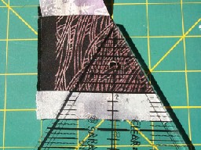
Figure 12
11. Cut along the left side (Figure13) to make a triangle.
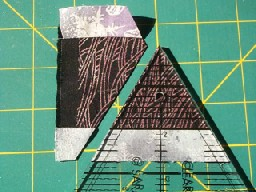
Figure 13
12. Turn the Clearview Triangle upside down, making
sure the top edge of the fabric strip is aligned with the
2 3/4"
line and the left edge of the fabric is aligned with the edge of
the Clearview Triangle (Figure 14).
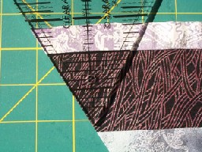
Figure 14
13. Cut along the right side (Figure 15) to make another triangle.
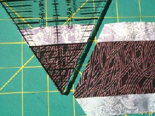
Figure 15
14. Line the 2 3/4" line of your Clearview Triangle along the bottom edge of Strata 2 (Figure 16).
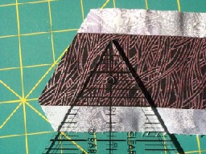
Figure 16
15. Repeat steps 8 through 14 until you have cut 54(486) triangles from Strata 2.
16. Repeat step 7 with Strata 1.
17. Repeat steps 8 through 14 until you have cut 36(324) triangles from Strata 1.
18. Repeat step 7 with Strata 3.
19. Repeat steps 8 through 14 until you have cut 12(108) triangles from Strata 3.
20. Repeat step 7 with Strata 4.
21. Repeat steps 8 through 14 until you have cut 36(324) triangles from Strata 4.
All triangles should be the same size.
Part Four will be available September 1st. Have fun!